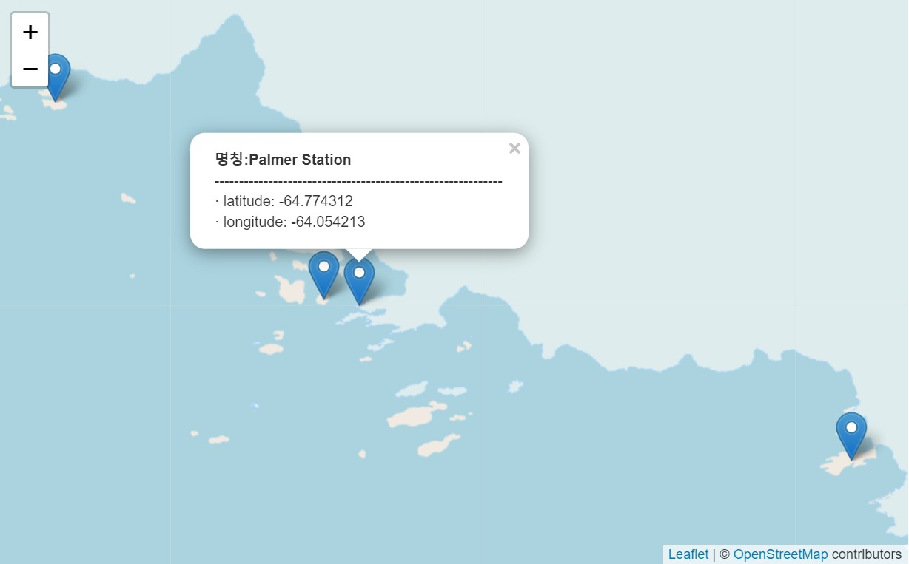

library(tidyverse)
library(palmerpenguins)
# 1. 데이터 불러오기
data(penguins)
# 2. 데이터 구조 확인
glimpse(penguins)
#> Rows: 344
#> Columns: 8
#> $ species <fct> Adelie, Adelie, Adelie, Adelie, Adelie, Adelie, Adel…
#> $ island <fct> Torgersen, Torgersen, Torgersen, Torgersen, Torgerse…
#> $ bill_length_mm <dbl> 39.1, 39.5, 40.3, NA, 36.7, 39.3, 38.9, 39.2, 34.1, …
#> $ bill_depth_mm <dbl> 18.7, 17.4, 18.0, NA, 19.3, 20.6, 17.8, 19.6, 18.1, …
#> $ flipper_length_mm <int> 181, 186, 195, NA, 193, 190, 181, 195, 193, 190, 186…
#> $ body_mass_g <int> 3750, 3800, 3250, NA, 3450, 3650, 3625, 4675, 3475, …
#> $ sex <fct> male, female, female, NA, female, male, female, male…
#> $ year <int> 2007, 2007, 2007, 2007, 2007, 2007, 2007, 2007, 2007…
# 3. 종별 개체 수
penguins %>%
count(species, name = "개체수")
#> # A tibble: 3 × 2
#> species 개체수
#> <fct> <int>
#> 1 Adelie 152
#> 2 Chinstrap 68
#> 3 Gentoo 124
# 4. 기본 통계 요약
penguins %>%
select(where(is.numeric)) %>%
summary()
#> bill_length_mm bill_depth_mm flipper_length_mm body_mass_g
#> Min. :32.10 Min. :13.10 Min. :172.0 Min. :2700
#> 1st Qu.:39.23 1st Qu.:15.60 1st Qu.:190.0 1st Qu.:3550
#> Median :44.45 Median :17.30 Median :197.0 Median :4050
#> Mean :43.92 Mean :17.15 Mean :200.9 Mean :4202
#> 3rd Qu.:48.50 3rd Qu.:18.70 3rd Qu.:213.0 3rd Qu.:4750
#> Max. :59.60 Max. :21.50 Max. :231.0 Max. :6300
#> NA's :2 NA's :2 NA's :2 NA's :2
#> year
#> Min. :2007
#> 1st Qu.:2007
#> Median :2008
#> Mean :2008
#> 3rd Qu.:2009
#> Max. :2009
#> 3 펭귄 데이터로 배우는 AI-인간 협업
학습 목표
- AI와 함께 실제 데이터셋 탐색하기
- R 코드를 직접 실행하며 문법 이해하기
- AI 생성 코드를 점진적으로 수정하는 방법
- 펭귄 데이터를 통한 데이터 과학 전체 흐름 체험
3.1 펭귄 vs 붓꽃: 윤리적 데이터 과학
데이터 과학에서 최근 R.A. Fisher의 과거 저술 “The genetical theory of natural selection” (Fisher 1930)의 우생학(Eugenics)에 대한 관점이 논란이 되면서 R 데이터 과학의 전통적인 예제 데이터셋 iris (붓꽃)를 다른 데이터로 대체하려는 움직임이 활발히 전개되고 있다.
palmerpenguins 데이터셋 (Horst, Hill, 와/과 Gorman 2020; AbdulMajedRaja 2020; Levy 2019)이 대안으로 많은 호응을 얻고 있으며, 미국 Black Lives Matter 운동과 맞물려 데이터 과학 커뮤니티가 윤리적 데이터 과학을 실천하는 좋은 사례가 되었습니다.
노트AI 시대의 윤리
2026년 AI 시대에도 윤리는 더욱 중요합니다: - AI 모델의 편향(bias) 문제 - 데이터 출처의 윤리성 - AI 생성 콘텐츠의 저작권
펭귄 데이터는 윤리적으로 수집되고 공개된 데이터의 좋은 예입니다.
3.2 AI와 함께 펭귄 데이터 첫 만남
3.2.1 2장에서 배운 방법 적용
2장에서 ChatGPT로 데이터 분석을 경험했습니다. 이제 R을 실제로 설치하고 AI가 생성한 코드를 직접 실행해봅시다.
힌트R 설치 가이드
아직 R을 설치하지 않았다면: 1. R 다운로드 2. RStudio 다운로드 3. RStudio에서 install.packages("tidyverse") 실행 4. install.packages("palmerpenguins") 실행
설치 시간: 약 15-20분
3.2.2 AI에게 펭귄 데이터 탐색 요청
ChatGPT에게 다음 프롬프트를 입력합니다:
R의 palmerpenguins 패키지를 사용하여:
1. 펭귄 데이터 불러오기
2. 데이터 구조 확인 (행/열 개수, 변수명, 데이터 타입)
3. 종(species)별 개체 수 확인
4. 기본 통계 요약
tidyverse 스타일로 R 코드 작성해줘.3.2.3 AI 생성 코드
3.2.4 코드 한 줄씩 이해하기 (AI와 함께)
이제 각 줄이 무엇을 하는지 AI에게 물어봅시다:
질문 1: “glimpse()는 무엇을 하나요?”
AI 답변: > glimpse()는 데이터프레임의 구조를 요약해서 보여줍니다: > - 총 행과 열 개수 > - 각 열의 이름과 데이터 타입 > - 각 열의 첫 몇 개 값 > > str()과 유사하지만 tidyverse 스타일로 보기 좋게 출력합니다.
질문 2: “count(species, name = ‘개체수’)는 무엇을 하나요?”
AI 답변: > count()는 특정 변수의 빈도를 계산합니다: > - species: 어떤 변수를 세는지 > - name = "개체수": 결과 열의 이름 (기본은 “n”) > > SQL의 GROUP BY + COUNT(*) 와 동일합니다.
질문 3: “select(where(is.numeric))는 무엇을 하나요?”
AI 답변: > - select(): 특정 열을 선택 > - where(): 조건을 만족하는 열 선택 > - is.numeric: 숫자형 열만 > > 결과: 모든 숫자 열만 선택 (species, island 같은 문자열 제외)
중요학습 패턴
전통 방식: 책에서 glimpse() 정의 찾기 → 예제 읽기 → 실습
AI 방식: 코드 보기 → AI에게 질문 → 답변 이해 → 바로 수정 시도
AI와 대화하며 배우면 맥락(context) 안에서 학습되어 기억에 오래 남습니다.
3.3 직접 수정해보기: AI와 Pair Programming
이제 AI 코드를 수정해봅시다. ChatGPT에게:
위 코드를 수정해서:
1. Adelie 펭귄만 필터링
2. 부리 길이(bill_length_mm) 평균 계산
3. 성별(sex)로 그룹화해서 비교
코드 작성해줘.AI가 제안한 수정:
3.3.1 새로운 코드에서 배우기
새로 등장한 함수들:
-
filter(species == "Adelie"): Adelie만 선택 -
group_by(sex): 성별로 그룹화 -
summarize(): 요약 통계 계산 -
mean(bill_length_mm, na.rm = TRUE): 평균 (결측치 제거) -
n(): 각 그룹의 개체 수 -
drop_na(sex): sex가 NA인 행 제거
직접 실행해보세요! RStudio에서 위 코드를 복사하여 실행하면:
# A tibble: 2 × 3
sex 평균_부리길이 개체수
<fct> <dbl> <int>
1 female 37.3 73
2 male 40.4 73발견: Adelie 수컷 펭귄의 부리가 암컷보다 약 3.1mm 더 깁니다!
3.4 시각화: AI가 ggplot2 코드 생성
이제 시각화를 요청합니다:
Adelie 펭귄의 성별 부리 길이를 박스플롯으로 시각화해줘.
ggplot2 사용.AI 생성:
ggplot2 문법 이해 (AI에게 질문):
-
ggplot(aes(x = sex, y = bill_length_mm)): 캔버스 + 매핑 -
geom_boxplot(): 박스플롯 그리기 -
labs(): 제목과 축 레이블 -
theme_minimal(): 깔끔한 테마 -
theme(legend.position = "none"): 범례 숨기기 (x축에 이미 있으므로)
3.4.1 점진적 독립: 스스로 수정해보기
이제 AI 도움 없이 작은 수정을 시도해봅시다:
과제 1: 색상을 파란색과 분홍색으로 변경 힌트: scale_fill_manual(values = c("female" = "pink", "male" = "lightblue"))
과제 2: Chinstrap 펭귄으로 변경 힌트: filter() 안의 종 이름만 바꾸기
과제 3: 부리 깊이로 변경 힌트: bill_length_mm → bill_depth_mm
힌트막히면 AI에게!
수정이 어렵다면 언제든 AI에게 물어보세요: - “이 코드에서 색상을 바꾸려면?” - “에러가 났어요: [에러 메시지]” - “이 부분을 [원하는 것]으로 바꾸고 싶어요”
3.5 펭귄 공부
팔머(Palmer) 펭귄은 3종이 있으며 자세한 내용은 다음 나무위키를 참조한다. 1
- 젠투 펭귄(Gentoo Penguin): 머리에 모자처럼 둘러져 있는 하얀 털 때문에 알아보기가 쉽다. 암컷은 회색이 뒤에, 흰색이 앞에 있다. 펭귄 중에 가장 빠른 시속 36km의 수영 실력을 자랑하며, 짝짓기 준비가 된 펭귄은 75-90cm까지 자란다.
- 아델리 펭귄(Adelie Penguin): 프랑스 탐험가 뒤몽 뒤르빌(Dumont D’Urville) 부인의 이름을 따서 ’아델리’라 불리게 되었다. 각진 머리와 작은 부리 때문에 알아보기 쉽고, 다른 펭귄들과 마찬가지로 암수가 비슷하게 생겼지만 암컷이 조금 더 작다.
- 턱끈 펭귄(Chinstrap Penguin): 언뜻 보면 아델리 펭귄과 매우 비슷하지만, 몸집이 조금 더 작고, 목에서 머리 쪽으로 이어지는 검은 털이 눈에 띈다. 어린 턱끈 펭귄은 회갈색 빛을 띠는 털을 가지고 있으며, 목 아래 부분은 더 하얗다. 무리 지어 살아가며 일부일처제를 지키기 때문에 짝짓기 이후에도 부부로서 오랫동안 함께 살아간다.

다음으로 iris 데이터와 마찬가지로 펭귄 3종을 구분하기 위한 변수로 조류의 부리에 있는 중앙 세로선의 융기를 지칭하는 능선(culmen) 길이(culmen length)와 깊이(culmen depth)를 이해하면 된다.

3.6 펭귄 서식지
leaflet 패키지로 펭귄 서식지를 남극에서 특정한다. geocoding을 해야 하는데 구글에서 위치 정보를 구글링하면 https://latitude.to/에서 직접 위경도를 반환해 준다. 이 정보를 근거로 하여 펭귄 서식지를 시각화한다.


library(tidyverse)
library(leaflet)
library(palmerpenguins)
# library(tidygeocoder)
penguins %>% count(island)
island_df <- tribble(~"address", ~"lat", ~"lng",
"Torgersen Island antarctica", -64.772819, -64.074325,
"Dream Island antarctica", -64.725558, -64.225562,
"Biscoe Island antarctica", -64.811565, -63.777947,
"Palmer Station", -64.774312, -64.054213)
island_df %>%
leaflet() %>%
addProviderTiles(providers$OpenStreetMap) %>%
addMarkers(lng=~lng, lat=~lat,
popup = ~ as.character(
paste0("<strong>", paste0("명칭:",`address`), "</strong><br>",
"---------------------<br>",
"· latitude: ", `lat`, "<br>",
"· longitude: ", `lng`, "<br>"
)))

3.7 데이터 설치
remotes 패키지 install_github() 함수로 펭귄 데이터를 설치한다.
# install.packages("remotes")
remotes::install_github("allisonhorst/palmerpenguins")tidyverse 패키지 glimpse() 함수로 펭귄 데이터를 일별한다.
library(tidyverse)
library(palmerpenguins)
glimpse(penguins)
#> Rows: 344
#> Columns: 8
#> $ species <fct> Adelie, Adelie, Adelie, Adelie, Adelie, Adelie, Adel…
#> $ island <fct> Torgersen, Torgersen, Torgersen, Torgersen, Torgerse…
#> $ bill_length_mm <dbl> 39.1, 39.5, 40.3, NA, 36.7, 39.3, 38.9, 39.2, 34.1, …
#> $ bill_depth_mm <dbl> 18.7, 17.4, 18.0, NA, 19.3, 20.6, 17.8, 19.6, 18.1, …
#> $ flipper_length_mm <int> 181, 186, 195, NA, 193, 190, 181, 195, 193, 190, 186…
#> $ body_mass_g <int> 3750, 3800, 3250, NA, 3450, 3650, 3625, 4675, 3475, …
#> $ sex <fct> male, female, female, NA, female, male, female, male…
#> $ year <int> 2007, 2007, 2007, 2007, 2007, 2007, 2007, 2007, 2007…3.8 자료구조 일별
skimr 패키지를 사용해서 penguins 데이터프레임 자료구조를 일별한다. 이를 통해 344개 펭귄 관측값이 있으며, 7개 칼럼으로 구성된 것을 확인할 수 있다. 또한, 범주형 변수가 3개, 숫자형 변수가 4개로 구성되어 있다. 그외 더 자세한 사항은 범주형, 숫자형 변수에 대한 요약 통계량을 참조한다.
library(skimr)
penguins |>
skim_without_charts()| Name | penguins |
| Number of rows | 344 |
| Number of columns | 8 |
| _______________________ | |
| Column type frequency: | |
| factor | 3 |
| numeric | 5 |
| ________________________ | |
| Group variables | None |
Variable type: factor
| skim_variable | n_missing | complete_rate | ordered | n_unique | top_counts |
|---|---|---|---|---|---|
| species | 0 | 1.00 | FALSE | 3 | Ade: 152, Gen: 124, Chi: 68 |
| island | 0 | 1.00 | FALSE | 3 | Bis: 168, Dre: 124, Tor: 52 |
| sex | 11 | 0.97 | FALSE | 2 | mal: 168, fem: 165 |
Variable type: numeric
| skim_variable | n_missing | complete_rate | mean | sd | p0 | p25 | p50 | p75 | p100 |
|---|---|---|---|---|---|---|---|---|---|
| bill_length_mm | 2 | 0.99 | 43.92 | 5.46 | 32.1 | 39.23 | 44.45 | 48.5 | 59.6 |
| bill_depth_mm | 2 | 0.99 | 17.15 | 1.97 | 13.1 | 15.60 | 17.30 | 18.7 | 21.5 |
| flipper_length_mm | 2 | 0.99 | 200.92 | 14.06 | 172.0 | 190.00 | 197.00 | 213.0 | 231.0 |
| body_mass_g | 2 | 0.99 | 4201.75 | 801.95 | 2700.0 | 3550.00 | 4050.00 | 4750.0 | 6300.0 |
| year | 0 | 1.00 | 2008.03 | 0.82 | 2007.0 | 2007.00 | 2008.00 | 2009.0 | 2009.0 |
데이터가 크지 않아 dplyr 패키지 glimpse() 함수를 통해 데이터 전반적인 내용을 살펴볼 수 있다.
penguins %>%
glimpse()
#> Rows: 344
#> Columns: 8
#> $ species <fct> Adelie, Adelie, Adelie, Adelie, Adelie, Adelie, Adel…
#> $ island <fct> Torgersen, Torgersen, Torgersen, Torgersen, Torgerse…
#> $ bill_length_mm <dbl> 39.1, 39.5, 40.3, NA, 36.7, 39.3, 38.9, 39.2, 34.1, …
#> $ bill_depth_mm <dbl> 18.7, 17.4, 18.0, NA, 19.3, 20.6, 17.8, 19.6, 18.1, …
#> $ flipper_length_mm <int> 181, 186, 195, NA, 193, 190, 181, 195, 193, 190, 186…
#> $ body_mass_g <int> 3750, 3800, 3250, NA, 3450, 3650, 3625, 4675, 3475, …
#> $ sex <fct> male, female, female, NA, female, male, female, male…
#> $ year <int> 2007, 2007, 2007, 2007, 2007, 2007, 2007, 2007, 2007…3.9 데이터 시각화
palmerpenguins 데이터셋 소개에 포함되어 있는 미국 팔머 연구소 (palmer station) 펭귄 물갈퀴(flipper) 길이와 체질량(body mass) 산점도를 그려보자.
library(tidyverse)
library(extrafont)
loadfonts()
mass_flipper <- ggplot(data = penguins,
aes(x = flipper_length_mm,
y = body_mass_g)) +
geom_point(aes(color = species,
shape = species),
size = 3,
alpha = 0.8) +
theme_minimal(base_family = "NanumGothic") +
scale_color_manual(values = c("darkorange","purple","cyan4")) +
labs(title = "남극 펭귄 3종 물갈퀴 길이와 체질량 관계",
x = "물갈퀴 길이 (mm)",
y = "체질량 (g)",
color = "펭귄 3종",
shape = "펭귄 3종") +
theme(legend.position = c(0.2, 0.7),
legend.background = element_rect(fill = "white", color = NA),
plot.title.position = "plot",
plot.caption = element_text(hjust = 0, face= "italic"),
plot.caption.position = "plot")
mass_flipper
ragg::agg_jpeg("images/mass_flipper.jpeg", width = 10, height = 7, units = "in", res = 600)
mass_flipper
dev.off()
3.10 펭귄 내보내기
펭귄 데이터를 다양한 파일 형식으로 저장하는 것은 데이터 공유와 활용 측면에서 중요하다. 데이터 분석 프로젝트를 진행할 때, 협업하는 팀원들이 서로 다른 프로그래밍 언어나 도구를 사용할 수 있기 때문에, 데이터를 여러 형식으로 제공하면 원활한 협업이 가능해진다.
R 사용자는 .RDS나 .RData 파일을 선호할 수 있지만, 파이썬 사용자는 .feather나 .parquet 형식을 더 편리하게 사용할 수 있다. CSV나 엑셀 파일로 저장하면, R이나 파이썬을 사용하지 않는 팀원들도 쉽게 데이터에 접근할 수 있지만 파일 용량이 커지는 단점이 있다.
데이터베이스 형식인 SQLite로 저장하는 것은 대용량 데이터를 다룰 때 유용하고, 구글 스프레드시트와 같은 클라우드 기반 스토리지에 데이터를 저장하면, 인터넷만 연결되어 있다면 언제 어디서나 데이터에 접근할 수 있어 원격 협업 시 큰 도움이 된다.
graph LR
A["펭귄<br>데이터프레임"] --> B(파일 형식)
A --> C(데이터베이스)
A --> D(클라우드 스토리지)
subgraph 파일 형식
B --> E(.csv)
B --> F(.xlsx)
B --> G(.rda)
B --> H(.rds)
B --> I(.feather)
B --> J(.parquet)
end
subgraph 데이터베이스
C --> K(.sqlite)
end
subgraph 클라우드 스토리지
D --> L(pins)
D --> M(구글시트)
end
E --> E1[모든 사용자]
F --> F1[엑셀 사용자]
G --> G1[R 사용자]
H --> G1
I --> I1[R/Python 사용자]
J --> I1
K --> K1[SQL 사용자]
L --> G1
M --> E1
3.10.1 .csv 파일
palmerpenguins 패키지 penguins 데이터프레임에서 결측치를 제거하고, write_csv() 함수를 사용하여 data/penguins.csv 파일로 저장한다.
library(palmerpenguins)
penguins |>
drop_na() |>
write_csv("data/penguins.csv")
3.10.2 .xlsx 엑셀 파일
readxl 패키지는 엑셀 파일을 불러오는 데 적합하지만 엑셀파일로 저장하는 기능은 없다. writexl 패키지 write_xlsx() 함수를 사용하여 데이터를 data/penguins.xlsx 파일로 저장한다.
library(writexl)
penguins |>
drop_na() |>
write_xlsx("data/penguins.xlsx")
3.10.3 .sqlite 데이터베이스
SQLite 데이터베이스를 비롯하여 많은 관계형 데이터베이스가 있다. R에서 데이터베이스에 관계없이 데이터를 저장하려면 DBI와 각 데이터베이스 드라이버를 장착하고 동일한 문법에 맞춰 데이터프레임을 데이터베이스에 저장한다.
DBI 패키지와 RSQLite 패키지를 로드한 후 dbConnect() 함수를 사용하여 SQLite 데이터베이스에 연결한다. dbname 인자로 데이터베이스 파일 경로와 이름을 data/penguins.sqlite와 같이 지정한다. dbWriteTable() 함수를 사용하여 펭귄 데이터프레임을 SQLite 데이터베이스의 테이블로 저장한다. overwrite = TRUE 옵션은 이미 존재하는 테이블을 덮어쓰도록 설정한다. 마지막으로 dbDisconnect() 함수로 데이터베이스 연결을 종료한다.
library(DBI)
library(RSQLite)
con <- dbConnect(RSQLite::SQLite(), dbname = "data/penguins.sqlite")
dbWriteTable(con, "penguin", penguins |> drop_na() , overwrite = TRUE)
dbDisconnect(con)
3.10.4 pins
pins 패키지는 R 사용자들이 데이터, 모델, 기타 R 객체를 쉽게 공유하고 관리할 수 있게 해준다. 먼저 board_folder() 함수를 사용하여 로컬 폴더에 보드를 생성한다. 사용자명을 달리하여 각자 환경에 맞춰 "C:/Users/<사용자명>/OneDrive/pins"와 같이 보드 폴더로 설정한다.
metadata 리스트를 생성하여 데이터에 대한 추가 정보를 제공하여 공유 데이터를 전달받는 사용자 입장에서 데이터를 즉각적으로 파악할 수 있도록 한다. pin_write() 함수를 사용하여 펭귄 데이터를 보드에 핀(pin)으로 저장하면서 name, title, description 등의 인자를 통해 핀에 대한 정보를 제공하고, metadata 인자를 사용하여 앞서 생성한 메타데이터를 핀에 첨부한다.
3.10.5 구글시트
구글시트는 구글에서 제공하는 엑셀과 동일한 온라인 스프레드시트 서비스로, 실시간 협업, 버전 관리, 클라우드 저장 등의 기능을 제공한다.
R에서 구글시트와 구글 드라이브를 사용하기 위한 인터페이스를 제공하는 googlesheets4와 googledrive 패키지를 로드한다. googledrive::drive_auth() 함수를 호출하여 구글 드라이브 인증 과정을 거친다. 함수를 실행하면 웹 브라우저가 열리고, 구글 계정으로 로그인하여 인증을 완료해야만 R에서 구글 드라이브와 구글시트에 접근할 수 있다.
인증이 완료되면 gs4_create() 함수를 사용하여 새로운 구글시트를 생성한다. name 인자로 시트의 이름을 지정하고, sheets 인자로 시트에 포함될 데이터를 리스트 형태로 제공한다. penguins라는 이름의 시트를 생성하고, 그 안에 펭귄 데이터를 저장한다.
library(googlesheets4)
library(googledrive)
googledrive::drive_auth()
gs4_create(
name = "penguins",
sheets = list("penguins" = penguins |> drop_na())
)
#> ✔ Creating new Sheet: penguins.
#> Waiting for authentication in browser...
#> Press Esc/Ctrl + C to abort
#> Authentication complete.

3.10.6 그 외 형식
앞서 살펴본 데이터 형식은 데이터 과학을 처음 접하는 사용자들이 많이 사용하는 형식이다. 하지만 데이터 과학자로 성장해 나가면서 그 외에도 다양한 형식의 데이터를 마주하게 된다. 펭귄 데이터셋을 비롯한 여러 데이터를 다양한 파일 형식으로 저장할 수 있는데, 각 파일 형식마다 장단점이 있으므로 상황에 맞게 적절한 파일 형식을 선택하여 사용하는 것이 좋다.
.rds 파일 형식은 단일 객체를 저장하고 공유하는 데 적합하며, .rda 파일 형식은 여러 객체를 하나의 파일에 저장하고 작업 환경을 공유하는 데 유용하다. .rds 파일은 크기가 작아 전송 및 저장에 효율적이며, 불필요한 객체를 함께 불러오는 것을 방지할 수 있다. 반면에 .rda 파일은 관련된 여러 객체를 한 번에 저장하고 불러올 수 있어 편리하다.
.rda 파일 형식은 여러 개의 R 객체를 하나의 파일에 저장할 수 있다. save() 함수를 사용하여 생성하며, 파일에 저장된 객체의 이름을 그대로 사용하여 불러올 수 있다. .rds 파일 형식은 하나의 R 객체만 저장할 수 있다. saveRDS() 함수를 사용하여 생성하며, 파일에서 객체를 불러올 때는 readRDS() 함수를 사용하고 객체의 이름을 지정해야 한다.
.rda 파일 형식으로 저장하기 위해서 save() 함수를 사용한다.
save(penguins, file = "data/penguins.rda").rds 파일 형식으로 저장하기 위해서 saveRDS() 함수를 사용한다.
애로우(arrow) 패키지 .feather 파일 형식은 데이터프레임을 빠르게 읽고 쓰는 데 최적화되어 있다. R 기본 파일 형식인 .RDS나 .RData에 비해 읽기 및 쓰기 속도가 매우 빠르고 .feather 파일은 언어에 구애받지 않아 파이썬, 줄리아 등 다른 프로그래밍 언어에서도 쉽게 사용할 수 있다. 다만 .feather 형식은 데이터프레임만 저장할 수 있고, 다른 R 객체는 저장할 수 없다는 점이 .RDS나 .RData와 다르다.
.feather 파일 형식으로 저장하기 위해서 arrow 패키지 write_feather() 함수를 사용한다.
파케이(.parquet) 파일 형식은 행 대신 열 지향적 데이터 저장 방식을 사용하여 데이터프레임을 효율적으로 저장하고 빠르게 읽을 수 있도록 설계되었다. 파케이는 대용량 데이터 처리에 최적화되어 있어, 데이터 크기가 매우 큰 경우에도 빠른 읽기 및 쓰기 성능을 보장한다. 또한 파케이는 데이터 압축을 지원하여 저장 공간을 절약할 수 있다. .parquet 파일 형식으로 저장하기 위해서는 arrow 패키지 write_parquet() 함수를 사용한다.
write_parquet(penguins |> drop_na(), "data/penguins.parquet")3.11 요약
펭귄 데이터셋은 데이터 과학 분야에서 새롭게 주목받고 있는 데이터셋으로 피셔의 우생학 관점이 담긴 붓꽃 데이터셋을 대체하려는 움직임 속에서 대안으로 떠오르고 있다. 이 데이터셋은 남극의 팔머 연구소에서 수집된 세 종류의 펭귄(젠투, 아델리, 턱끈 펭귄)의 형태학적 특징을 담고 있다.
펭귄 데이터는 palmerpenguins 패키지를 통해 쉽게 설치하고 사용할 수 있으며, 데이터 탐색 과정에서 skimr와 dplyr 패키지의 함수들을 활용하여 데이터의 구조와 특징을 파악할 수 있다. 또한 ggplot2 패키지를 사용하여 펭귄 종별 물갈퀴 길이와 체질량 간의 관계를 시각화할 수 있다.
펭귄 데이터 자체보다는 데이터를 다양한 형식으로 저장하고 공유하는 것은 데이터 과학에서 중요한 부분이다. R 사용자들은 .rds, .rda, .feather, .parquet 등의 파일 형식을 선호하지만, 협업을 위해서는 .csv, .xlsx, SQLite 데이터베이스 등 다른 도구에서도 쉽게 사용할 수 있는 형식으로 저장하는 것이 좋다. 또한 pins 패키지나 구글 스프레드시트를 활용하면 클라우드 기반에서 데이터를 공유하고 협업할 수 있다.
펭귄 데이터셋은 데이터 과학 교육 및 연구에 널리 사용될 수 있는 유용한 자료로, 데이터 탐색, 시각화, 전처리, 모형 등 다양한 단계에서 저작권 걱정없이 누구나 활용할 수 있다.